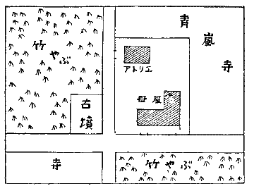
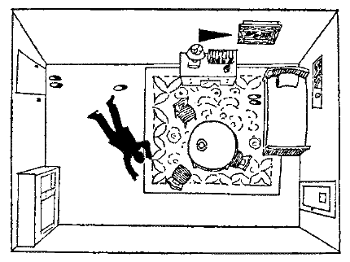

その一 速球投手と女優の身売り
新しい年も九日になるのに、うちつづく正月酒で頭が痛い。
「ヤア、細巻さん。お待ちしていました。とうとう現れましたぜ。
こう云って頭をかいてニヤニヤしたのは、専売新聞社会部記者の
「ほんとか。暁葉子が来てるって？」
「なんで、嘘つかんならんですか」
「なんだって、君は又、暁葉子を追っかけ廻すんだ。くどすぎるぜ」
「商売ですよ。察しがついてらッしゃるくせに。会わして下さい。たのみますよ」
「ま、待ってろ。
暁葉子は年末から一ヵ月ちかく社へ顔をださないのである。暮のうち、
しかし、葉子に恋人があるという噂を小耳にしたのは、ようやく三日前だ。おまけに、その恋人が、職業野球チェスター軍の名投手
この話が本当なら宣伝効果百パーセントというところだが、あんまり話が面白すぎる。いゝ加減な噂だろうと思ったが、羅宇木介が執念深く葉子を探しているのに気がつくと、ハテナと思った。専売新聞はネービーカット軍をもつ有名な野球新聞だ。
細巻が部長室へはいると、若い部員がきて、
「暁葉子と小糸ミノリがお目にかかりたいと待ってますが」
「フン。やっぱり、本当か。つれてこいよ」
暁葉子はかけだしのニューフェイスだが、細巻がバッテキして、相当な役に二、三度つけてやった。メガネたがわず好演技を示して、これから売りだそうというところ。細巻もバッテキの甲斐があったといささか鼻を高くしていた矢先であったから、はいってきた葉子とニューフェイス仲間のミノリを睨みつけて、
「バカめ。これからという大事なところで、一ヵ月も、どこをウロついて来たんだ。返事によっては、許さんぞ」
「すみません」
葉子は唇をかんで涙をこらえているようである。父とも思う細巻の怒りに慈愛のこもっているのが骨身にひびくのである。
「言い訳は申しません。私、家出して、恋をしていました」
「オイ。オイ。ノッケから、いい加減にしろよ」
「ホントなんです。せめて部長に打開けて、と思いつづけていましたが、かえって御迷惑をおかけしては、と控えていたのです」
「ふうン。誰だ、相手は？」
葉子はそれには答えず、必死の顔を上げて、
「私の芸に未来があるでしょうか。どんな辛い勉強もします」
「それが、どうしたというんだ」
「十年かかってスターになれるなら、そのときの出演料を三百万円かしていただきたいのです」
葉子は蒼ざめた真剣な顔で、細巻の呆れ果てたという無言の面持を見つめていたが、やがて泣きくずれてしまった。
ミノリが代って物語った。
「葉子さんの愛人はチェスターの大鹿投手なんです」
「やっぱり、そうか」
「家出なさった時から、私、相談をうけて、かくまってあげたり、岩矢天狗さんと交渉したりしたのですが、天狗さんは、手切れ金、三百万円だせ、と
「ふむ。大それたことを、ぬかしよる」
大声で叱りつけたが、神経が細くては出来ない撮影所勤め、太鼓腹をゆすって、案外平然たるものだ。しかし、頭に閃いたことがあるから、二人を部屋に残しておいて、スカウトの煙山の部屋を訪ねた。スカウトというのは、有望選手を見つけだしたり、買収して引ッこぬいたりする役目で、ここに人材がいないとチーム強化ができない。煙山は日本
細巻は煙山の部屋へとびこんで、
「オイ、ちょッとした話があるんだが」
「なんだい」
「実はこれこれだ」
と、テンマツを語ってきかせる。
「フーム。ちょッとした話どころじゃないじゃないか。大鹿は灰村カントクの子飼いだから、動かないものだと、各球団で諦めていた男だ。しかし、三百万円は高いな。そんな高額は各球団に前例がないと思うが、しかし、三百万の値打はある。あいつが加入すれば、優勝疑いなしだよ。さっそく社長に話してみようじゃないか」
敷島社長の部屋を訪れて相談したが、三百万という値はなんとしても高額すぎる。去年のトレードは五十万から八十万が最高と云われ、今年はベストテンの上位選手で百万、一人ぐらいは、百五十万、二百万選手ができるかも知れないと噂されている。球団が十五に増したから、選手争奪が激しく、高値をよんでいるのである。
「いくら三振王だってたかが
太ッ腹の敷島だが、こう云うのは、ムリがない。
「しかしですね。あれが加入すれば必ず優勝しますよ。優勝すれば、安いものです。とにかく、大鹿は三百万の金がいる。三百万必要だから動くんですよ。さもなきゃ絶対動かん選手なんだから、相場を度外視して、三百万そろえて下さい」
「じゃア、こうしよう。とにかく、三百万、そろえれば、いいのだろう。大鹿に百万。暁葉子の出演料の前貸しとして二百万。これで当ってみたまえ。暁葉子の二百万も例外だが、いずれ、返る金だから、あきらめるよ」
「そうですか。じゃ、それで当ってみましょう」
そこで煙山は、さッそくその日の夜行で京都へ走った。京都には、大鹿と葉子が愛の巣を営むための秘密の隠れ家があるのである。それは、大鹿と葉子だけしか知っていない。そこは嵐山の片隅のアトリエだ。母屋から、かなり離れて独立している。主人の画家が死んだ後は、使用されずにいたものであった。煙山と細巻は葉子から、くだんの住所をききとると、話が落着するまでは誰にも知られず姿を隠しているようにと言い含めて、裏門から帰させ、煙山も裏門から脱けだして、京都へ走ったのである。
地図をたよりに来てみると、右隣と裏はお寺、左隣が古墳で、前が竹ヤブの密生した山という大変な淋しいところ。（地図参照）

初対面ではあるが、煙山スカウトといえば球界で有名なキレ者、その訪問をうければ、選手は一流中の一流と格づけされたようなものだ。大鹿は敬意を払って迎えた。
「実は、暁葉子が昨日社へ現れて、出演料三百万前借させてくれと云うのだな。君が三百万で身売りするのが見るに忍びんというわけだ。しかし、スターならいざ知らず、海のものとも山のものともつかないニューフェイスに、三百万はおろか、三十万でも社で渋るのが当然なわけだ。けれども、君とコミにして、君たちに必要な三百万、耳をそろえようというのだが、どうだろう。君の契約金百万、葉子への前貸し二百万という内訳だ。君の百万という契約金は少い額だとは思わないが」
「御厚意は感謝します。少いどころか、新人のボクに百万の契約金は有難すぎるお話ですが、しかし、ボクもムリと承知で、三百万で身売り先を探しているのです。葉子さんに迷惑かけては、男が立ちません。どんな不利な条件で、たとえば、一生球団にしばられてもかまいませんから、三百万の契約金が欲しいんです」
「なるほど、そうか。君がその覚悟なら、又、話は別だ。それでは、君の意向を社長につたえて、相談の上、返事するから、待っていてくれたまえ。君は、すでに、よその球団へ口をかけていたのか」
「いえ、まだ、どこといって、球団を指定していやしませんが、元夕刊スポーツの婦人記者の上野光子が、関西方面で、フリーの女スカウトの看板をあげてるんです。どこの球団にも所属せず、顔を利用して、ワタリをつけるというわけです。昨夜、上野光子に会って、希望をつたえたのです」
「ふウン。悪いのに、たのんだなア」
大鹿は煙山に顔を見つめられて、あかくなった。
「どうにも、仕方がなかったのです。ボクはまだプロ一年生で、球団にワタリをつける方法の心当りがなかったものですから」
上野光子といえば、球界では名題の女であった。女学生時代はバレーか何かの選手だったというが、五尺四寸ちょッとの素晴らしい体躯、肉体美人だ。好試合を追って、東奔西走、夕刊スポーツに観戦記をものして、スポーツファンの人気を博していたが、選手たちに対しては、怖ろしくニラミの利く存在だった。というのは、一流選手の大半は光子の誘惑の魔手にかかって関係を結んでおり、それを種におさえつけられているからであった。彼女に内幕をあばかれると、たいがいの名選手が家庭争議を起して、神経衰弱にならざるを得ない。
そのニラミをきかせて、フリーの女スカウトをやりだしたのだ。大鹿が顔をあからめているところをみても、彼も亦誘惑にまけた一人だと見当がつくのである。
「光子はこの隠れ家を知っているのだね」
「いえ、この家は葉子さん以外は誰も知りません。上野光子とは外でレンラクしているのです」
「そうかい。それは、よかった。光子がカクサクしても、三百万という大金はどこの球団もださないと思うが、かりに、その口があったにしても保留しておいてくれ。すぐ返事をもってくるから」
「ハ。では、お待ちしています。葉子さんに、心配するな、と伝えて下さい」
「よし、心得た」
煙山は直ちに東京へとって返す。三百万といえば、話にのる球団があろうとは思われないが、ただ問題は、専売新聞だ。あそこは打撃の一流どこをズラリと揃えたが、投手が足りない。大資本にモノを云わせて、必死に投手引きぬきに暗躍しているのだ。その新聞の記者が朝日撮影所の門前に葉子をはりこんでいるのを見ても、この新聞は大鹿の噂を知ったらしい。
煙山が京都駅から急行にのると、車中で上野光子にぶつかった。スラリと延びたからだを毛皮で包んで、どこの貴婦人かと見まがう様子だ。
「ヤア、御盛大だね。商用かい」
「あら、煙山さんこそ。誰をひッこぬきにいらしたの？ 大鹿投手？」
「え？ 大鹿が動くんかい？」
「しらッぱくれて。あなたの社の暁葉子と大鹿さんのロマンス、ちょッと教えてよ」
「え？ なんだって？ 初耳だな。君は、どこから、きいてきたのだ」
「そんなに、しらッぱくれるなら、きかなくッとも、いいですよ」
光子はニヤリと笑って、自分の席へ行ってしまった。
煙山は、とうとうイヤなことになったと思った。光子が関西の球団を当る限りは、大鹿の身売りは成功の見込みがない。しかし、東京へ行くとすれば、第一に、専売新聞、次に商売
こいつは油断がならないわい、と煙山も充分に心をかためた。
社へ戻ると、大鹿の意向を社長につたえ、又、上野光子が上京して、大鹿売りこみのカクサクをしていることも言い添えた。
「なアに。専売新聞や、桜映画にしたところで、新人投手に三百万だすかい。いいところ、百万だ。ただの五十万でも、ほかの選手から文句がでるだろうぜ」
「しかし、契約の条件によりけりですよ」
「だからさ。最も有利な条件で百万どまりにきまッとる」
「いや、専売新聞に欲しいのは投手です。これは油断ができません。我々に欲しいのも第一に投手。次に三番四番が足りない。もしラッキーストライクに大鹿が加入して、三番にピースの国府一塁手、四番にキャメルの桃山外野手がとれたら、攻守ともに百万ドル。優勝絶対です」
「それは優勝絶対にきまっとる。国府と桃山がとれるかい」
「必ず、とってみせます。百万ずつで、とってみせます。それを条件に、大鹿に三百万、やって下さい。私もスカウトをやるからには、絶対とれないという大鹿をとりたいのですよ。上野光子に負けたくありませんな」
「まア、君、国府と桃山をとってからの話にしようじゃないか。百万ずつで二人がとれたら、大鹿のことも考えてみよう。三人そろえば、優勝絶対だから」
「じゃ、当ってみます。二人がウンと云ったら、大鹿はキットですね」
「まア、二人のウンを先にきかせてくれ」
「よろしい。三日あとに吉報もってきます」
煙山はただちに再び西下した。
国府と桃山に当ってみると、百万円ならＯＫだという。煙山はよろこんだ。三日のうちに金をそろえてくるから、ほかの契約は断ってくれと念を押して、安心して、大鹿を訪ねた。
「ヤア、どうも返事がおくれて失礼した。実はコレコレで、国府と桃山の参加を条件に、その時は君にも三百万出そうと云う。どうやら国府と桃山には成功したから、よろこんでくれ。すぐ取って返して、三百万そろえてくるから」
「そうですか。実はちょッと、間の悪いことができたんです」
「どんなことが」
「実は岩矢天狗に二十日に三百万払うという約束をむすんだのです。二十日がせまっているのに、煙山さんから返事はこず、せっぱつまった気持のところへ、昨日、上野光子とレンラクがついたものですから、専売新聞か桜映画へたのんでくれ、どんな不利な条件でも、三百万になればいい、とたのんだのです」
「それは、まずいな。上野光子の返事は？」
「十九日の正午に料理屋で会うことになっています。きっと、成功してみせる、と云いきったのです」
「それは困ったな。今日は十七日だね。十八日朝ついて、夜行で発って、十九日朝ついて、上野光子をだしぬくことはできるが、そうまでする必要はあるまい。私の方は確実なのだ。夜汽車で金を運ぶのは危険だから、十九日の朝たって夕方つく。私の方はハッキリしているのだから、上野光子がどうあろうとも、キッパリ拒絶してくれないか。さもなければ、上野をスッポカして会わないようにしてもらいたい」
「ハア。確実なら、そうします」
「むろん、確実だ。二十日に岩矢天狗に金を払うのは、どこだ」
「岩矢天狗が京都にくることになっています。葉子さんも、十九日の夜、こッちへ着くことになっています」
「そうかい。それなら、十九日中に間に合えばいいわけだ。かならず、約束を守るから、君も守ってくれ。暁葉子のためにも、わが社第一と考えてくれよ」
「ハ。わかりました」
そこで煙山は、安心して、東京へ戻った。敷島社長に以上の話をすると、上野光子の話がそこまで出来かかっている以上、ひくわけにはいかない。
「よろしい。約束通り、大鹿をとろう。今日の夕方までに五百万そろえておくよ」
「そうですか。カバンを持って、うけとりに来ますよ」
「君は今夜たつのかい」
「いえ、明朝たちます。夜汽車に金を運ぶのは危険ですし、上野光子にぶつかっても、まずいでしょう。朝の急行の一番早いの、七時三十分にたちます。九時発の特急ツバメが、おそく発車して早くアチラへ着くのですが、特急は知った顔に会いますから、わざと七時三十分にたちます」
「よかろう」
夕方まで時間があるので、小糸ミノリの家を訪ねて、暁葉子に会った。三百万円の契約がととのったムネを知らせると、安心して、涙ぐんでしまった。
「君も明日、京都へ行くそうじゃないか」
「ええ」
「あんまり、目立たないようにしてくれよ。何時の汽車だね」
「午後一時、東京発。京都へは夜の十一時ちかくに着くはずなんです。岩矢と約束があるのです。汽車のなかで岩矢と二人だけの話をつけるつもりなのです」
「それは大鹿君が知っているのかね」
「いいえ」
葉子は、苦しそうに、うつむいた。
「ずいぶん危険な話じゃないか。私が京都駅へ出迎えてあげようか」
「いいえ、危険はありません。身をまもる方法を知っていますから」
「そうかね。まア、気をつけてくれたまえ」
午後三時半ごろ、煙山は五百万円うけとった。千円札で三百八十万。百円札で百二十万。百円札が大変だ。トランク二つの荷物になってしまった。
ところが、その夜の六時ごろである。
専売新聞の社会部の電話がなる。居合した羅宇木介がとりあげると、ききなれない男の声で、
「専売新聞ですね。ハア、あのね。野球通の人にたのまれたのですが、明朝七時三十分発博多行急行にラッキーストライクの煙山スカウトがのるから、尾行してみたまえ、という話ですよ。サヨナラ」
ガチャリときれた。
暁葉子にかかりきって大鹿とのロマンス、大鹿の居所などを追っかけていた木介は、ギョッとして、
「変な電話ですぜ。これこれです」
「ふウン。部長に知らせろ」
部長の自宅へ電話で指令を乞うと、
「実はな。大鹿のことでは、上野光子が引ッこぬきの話をもちこんでるんだ。上野光子は今夜の夜行で、京都へ行く筈だが、この引ッこぬきは金額の上で折合わなかったから、失敗するかも知れん。煙山がでかけるとすれば、これも大鹿ひきぬきだ。こッちが引ッこぬきに失敗したら、暁葉子のロマンスを素ッぱぬいてやれ。煙山をつけでみろ。そして、大鹿の愛の巣を突きとめておけ。煙山をつけて行けば、自然にわかるだろう。わかったな」
「ハ」
そこで木介は伝票をもらって、出張の用意をととのえた。
その二 一月十九日正午――一時
とある料亭の別室で、向い合って話しているのは、大鹿と上野光子である。
「桜映画じゃ、一流投手二三人引ッこぬきに成功したらしいのよ。それで、大鹿さんのこと、うけつけてくれないの。それで専売新聞にかけあったんだけど、どうしても、百万までね。まア、それが、ホントのところ、あなたのギリギリよ」
大鹿はむしろそれでホッとした顔だ。
「いえ、もう、その話は、いいですよ。どうも、お世話さまでした」
「アラ。アッサリしてるわね。やっぱり、ラッキーストライクがいいのね。暁葉子さんのいるところが」
「いえ、そんな話はありませんよ」
「ウソ仰有い。今夜、煙山クンがこッちへ来るでしょう」
「そんな話、知らないですね」
「フン」光子の眉間にピリピリ癇癪が走った。
「あなた、専売新聞のネービーカット軍に移籍しなさい。お約束の三百万、だします。専売から、百万。私から、二百万。私の全財産ですわ。どう？」
「もう、お金の必要がなくなったんです」
「なに云ってんのさ。なぜ、あなたが三百万円欲しかったか、私はチャンと突きとめてますよ。誰から、きいたと思う？ 岩矢天狗氏よ。あす二十日でしょう。彼氏、京都へ、暁葉子の手切金、うけとりに来る筈よ。三百万、払える？」
「えゝ、ま、なんとかなります」
「甘チャンね。煙山クン、お金なんか、持ってきやしないのよ。持ってくるのは百万だけよ。それで、なんとかなるの？」
そこは大鹿の急所だ。なんといっても、三百万という大金は、手にとってみないうちは、煙をつかむようで、見当がつかない。思わず言葉を失って、うなだれてしまった。
「私は煙山クンに会ったわよ。百万でごまかすツモリなの。あとは暁葉子の義理でひきずる算段よ。卑怯じゃないの。あなた、それでもいいの」
光子の目がランランと火をふいている。
「たとえ岩矢天狗のようなヨタモノ相手でも、人の奥さんとネンゴロになって、損害バイショウが払えなかったら、男がすたるわよ。野球選手の恥サラシじゃないの。私が二百万だしますから、岩矢天狗に、札束叩きつけてやってよ」
「あなたから、お金をもらうイワレはありませんよ」
「イワレはなくったって、お金が払えなかったら、どうするのよ」
「なんとかします。ボクは覚悟しました」
「なんの覚悟よ」
大鹿は男らしく、顔に決意をみなぎらした。
「そのときは、たぶん、死にますよ」
「バカね」
光子は苦笑したが、やがて顔色をやわらげた。
「未来の世界的大投手が、そんなことで死ぬなんて、ダラシないことね。私の言うこと、ききなさいな。私からお金をもらうイワレがないって云うけど、私と結婚しましょうよ」
大鹿はビックリして目をあげた。
「おどろくことないでしょう。去年の夏は、たのしかっわね。私、あなたの初登板の時から、日本一の大物だと思ったわ。ピースの豪球左腕投手
大鹿はなんとも不快な気持がこみあげてきたが、しかし、この先どうしたらいいのか、思えば、クラヤミがあるだけだ。胸がつぶれる悲しさである。
「なにを、ふさいでいるのよ。ほがらかに、ハッキリなさいな。私と結婚するのよ。そして、ネービーカットへ移籍するのよ。煙山クンや、ラッキーストライクの卑劣さを嘲笑ってやりましょうよ。私、あなたのために、二百万円失うぐらい、なんとも思っていないわよ」
大鹿は冷めたく目をあげて、
「あなたと結婚するんでしたら、こんなに骨身をけずる思いをして、三百万円で苦労しやしませんよ」
光子の顔色が変った。
「なんですって？」
「ボクは暁葉子さんと結婚したいのです。そのために、こんなに苦しい思いをしているのです」
「フン。結婚できないわよ。岩矢天狗に三百万円、払えないもの」
「その時の覚悟はきめていますよ。どなたのお世話にもなりません。自分一人で解決します。色々と面倒なことお願いして、すみませんでした。失礼します」
「お待ち！」
「いえ、ボクの気持をみださないで下さい」
クルリとふりむくと、ひきとめる手をふりはらって、大鹿は、立ち去ってしまった。光子が追って出た時は、もう大鹿の姿はなかった。
光子はジダンダふんだ。どうしても、大鹿の住所を突きとめねばならない。突きとめてみせる。そして、復讐してやる。ラッキーストライクへの移籍話をぶちこわして、三百万円をフイにさせ、岩矢天狗への支払いを妨害してやる。そして、自分に縋らざるを得ないようにしてみせる。天下の女スカウト上野光子は誰にも負けない女なのだ。
何時に着くかは知れないが、今夜中には煙山が来る筈だ。なぜなら、明朝までに、三百万の契約金を大鹿に手渡す必要があるだろうから。彼女は煙山を京都駅に張りこんでやろうかと思った。しかし、張りこんで、後をつけたにしても、その時はもう彼らの商談の終りだ。
光子が考えこんで歩いていると、一服投手にパッタリあった。
「さっきは、よくも、捨てゼリフを残して逃げたな。ヤイ、お光」
「なによ。天下の往来で」
「フン。どこだって、かまうもんか。キサマ、ほんとに大鹿と結婚するのか」
「フフ」
「オイ。もし、結婚するなら、キサマか、大鹿か、どっちか一方、殺してやる」
「すごいわね」
「なア、オイ、ウソだと云え」
「さア、どうだか。今のところ、ハッキリしないから。二三日うちに分るわよ。大鹿さんと結婚するか、しないかが」
「大鹿はどこに住んでる」
「私もそれが知りたいのよ」
「フン。隠すな。痛い目をみたいか」
「隠すもんですか。私も探しているのだもの。あんた、探せたら、探してよ」
「よし、探してみせる。ついてこい」
「どっちよ」
「だいたい見当がついてるんだ。大鹿が、嵐山の終点で下車するという噂があるんだ」
「あそこから、又、清滝行の電車だってあるじゃないの」
「なんでも、いゝや。意地で探してみせるから。オレが大鹿と膝ヅメ談判して、奴が手をひくと云ったら、お光はオレと結婚するな」
「さア、どうだか。大鹿さんと結婚しないったって、あんたと結婚するとは限らないわよ」
「そうは云わせぬ」
「じゃア、どう言わすの」
「とにかく、大鹿の隠れ家を突きとめてみせるから、ついてこい」
一服は、光子をムリヤリひっぱるようにして歩きだした。光子も大きいとは云え、六尺ゆたかの一服のバカ力にかかっては、仕方がない。
しかし奇策縦横の自信は胸に満々たる光子、イザという時の用意には充分に確信があるから、このデクノボーのバカの一念で大鹿の隠れ家が分ったら、モッケの幸い、と内々ホクソ笑んで、ひっぱられていった。
その三 尾行
同じ朝の東京駅、七時三十分発博多行急行発車の十分前。金口副部長と羅宇木介が、煙山の姿の現れるのを待っている。
見知らぬ土地での追跡に一人じゃ危いというので、金口副部長も同行することゝなったのである。
「ヤ、来た、来た」
「どれだい。煙山は？」
「ヤに大きなカバン二つぶらさげてやがら。あの男ですよ」
「あの鳥打帽かい？」
「そうです」
四十五六の苦味走った男。この煙山、野球のスカウトで名高いが、本来は、剣術と柔道の使い手、五尺四寸五分のあたりまえの背丈だが、ガッシリした体格だ。スカウトとしては名声があるが、その私生活は、はなはだ世評の
煙山が乗車したのを見届けて、金口と木介は中央の二等車にのる。そこには煙山は乗っていない。
「ハテナ。一等車かな。それとも一番前の二等車かな。モク介、見てこいや」
「ヘエ」
木介はズッと見てきたが、
「イヤハヤ。敵はさるもの、驚きましたわい」
「なにを感心しとる」
「一等車にはいませんわ。一番前の二等車にも、いませんが。なんぞ、はからん三等車の隅に、マスクをかけて顔をかくしていやがるよ。さッきの服装を見とったから、見破りましたが、煙山氏、お忍び旅行ですぜ。曰くありですな。察するに、二ツのトランクは、札束だ」
「今にして、ようやく、気がついたか」
「気がもめるね」
「煙山だって、自分の金じゃないのさ」
「なるほど。あさましきはサラリーマンだね。しかし、煙山氏の月給袋は、だいぶ、コチトラより重たいだろうなア」
と、木介は悲しいことを言っている。
無事、京都へとさしかかる。京都着は午後六時四十一分の予定。
「モク介。煙山の車へ行って、見張ってろよ」
「ヘエ」
しかし木介は京都へ着かないうちに、うかない顔で戻ってきた。
「煙山の姿が、見えないですよ」
「便所か」
「煙山の坐ってた近所の人にきいてみたが、みんな知らないってさ。それから一応、アミダナを見て歩きましたが、あのトランクらしきものは二ツとも無くなってますな。コチトラ、自慢じゃないが、トランクに札束あり、と見破ってこのかたツラツラ目に沁みこませておきましたんで、見忘れないツモリですわ」
京都へつく。
二人は改札口のところにガン張って目を皿にしていたが、煙山は下車してこない。降車客は見えなくなった。
停車時間は十五分もあるから、乗換線のプラットホームをしらべたが、見当らない。念のため、もう一度、車内をテンケンすると、京都で乗客の大入換りがあって、かなり空席も目に立つ中に、いる、いる。
煙山は今度は最前部の二等車のマンナカあたりにマフラーで顔を隠し、オーバーの襟を立てて、雑誌をよんでいる。例のカバンは座席の下へ押しこんで足でおさえている。
「実に要心深い奴だ。しょッちゅう座席を変えてやがんですよ。こうなったら、にがさねえ。コチトラ、ここで見張りますよ」
「よし。オレも見張るよ」
二人は気付かれぬように、彼の後方、はなれた空席に座をとった。
煙山は大阪で降りた。自動車を拾う。二人も自動車を拾って追跡。新淀川を渡って、
金口は自分で降りていって、煙山の運転手に、
「オレたちは怪しいものじゃない。新聞記者だ。ちょッとワケがあって、つけているから、つけ易いようにカーブのとき、たのむぜ」
と、チップをにぎらせた。
そして煙山のはいった家の門札を見ると、驚いた。キャメル軍の猛打者桃山外野手の住居である。
「敵は桃山か。こいつは、虚をつかれたな。さすがに、やりおるわい」
十四五分もたつと、煙山は出てきた。又、追跡、車は国道をブッ飛ばしてグングン京都の方角へ戻る。細い道へまがりこんで、辿りついたのが、山崎の里。相当な門構えの家の中へ、煙山は消えこんだ。
そこの門札をしらべると、ピース軍の至宝、好打の国府一塁の生家である。
「いよいよ出でて、いよいよ奇、やりおる、やりおる」
「怪物の名にそむきませんなア。敵ながら、アッパレな奴ッちゃ。これで札束がだいぶ減りおったろう」
木介は札束ばかり気にしている。
「モク介。この契約金、いくらと思う」
「罪なこと考えさせる手はねエですわ」
また十四五分で煙山が現れる。
自動車は一散に京都へ。
「なるほどねえ。ちゃんと諸事片づけて、大鹿の隠れ家へか。敵は順を考えとる。コチトラの追跡、知ってやせんですか」
「そうかも知れん。汽車の中から、ちゃんと見抜きおったかな」
「どうも、いけませんわ。札束のヘリメにしたがって、コチトラの腹がへるらしい。はやくヤケ酒がのみたいな」
車は京都の市街へはいった。車の止ったところは、河原町四条を下って、はいった、裏通りの、小粋な家。しかし、小ッちゃな、料理屋のようなところ。しかし、旅館の看板がぶらさがっている。そこまで送って自動車は戻っていく。二人も車を降りた。
「さては、ここが大鹿の隠れ家かな。よろし、こうなったら、オイラも泊りこんでやれ」
「よか、よか」
二人が旅館の玄関へ立つと、老婆がチョコチョコ出てきて、
「おいでやす」
「お部屋ありますか」
「お部屋どすか。あいにくどすなア。満員どすわ」
「今、一人、はいったでしょう」
「ハア、予約してはりましたんや」
「ズッと長く泊ってる人が一人いるでしょう」
「どないなお人どすねん」
「六尺ぐらいの大きい男」
「知りまへんなア」
「今、はいった人の知り合いの若い大男」
「知りまへんなア」
仕方がないから、二人は廻れ右。時計を見ると、九時五十分。
「アッ。ここに、ウドン屋があらア。一杯のんで、きいてみようや」
「それあるかな」
熱カンをつけてもらって、前の旅館に大男が泊っていないかサグリを入れるが要領を得ない。
「オッサン、野球、見ないかね」
「野球やったら、メシよりも好ッきやね」
「チェスターの大鹿投手、知ってるかい」
「スモークピッチャーや。ヒイキしてまんね」
「その大男や。前の旅館に泊っとらんか、そういう人物は」
「見かけまへんなア」知らなければ、長居は無用。
「ままよ。当ってくだけろ。いっそ、煙山に面会を申込もうや。相手が、どう出るか、やぶれかぶれさ」
「がってん」
そこで再び旅館にとって返して、
「さっきの煙山さんに会いたいが」
「ハア。煙山はん、御散歩におでかけどすわ」
「ヤヤ」
木介は奇声を発した。金口はさすがに落着いて、
「どんな姿。宿のドテラ」
「いえ、洋服どした」
「さては、カバンをぶらさげて！」
木介、カバンの執念、でかい声で、思わず、わめく。老婆はビックリして、
「いえ、カバンは置いてかはりましたんや。散歩どすよってなア」
「フーム。奇々怪々」
二人はガッカリして外へでた。
「まア、仕方がない。ひとつ、支局へ寄ってみようや」
支局へ立ち寄ると、夕方五時ごろ本社から金口宛ての電話があって、午後十時四十七分着急行で、暁葉子と岩矢天狗が京都へ着くはずだから、その時間に京都駅へ行ってみろ、と、指令してある。
ところが、彼らは失敗した。まッすぐ支局へ行けばよかったものを、新京極をブラついて、串カツで一杯ひっかけたりしたから、支局へ現れたのが、十一時五分だ。
アッと叫んだが、後の祭り。それでも、汽車がおくれて着くかも知れないと、哀れな神だのみ、出かけようとすると、
「そう、そう。あなた方の代りに、別の迎えが行ってますよ」
「誰が？」
「ちょうど、五時半ごろでしたかネ。上野光子女史が現れて、大鹿と懇談したけれど、本社が金を出し渋るから、契約がまとまらない、と云うのですね。クサリきっていましたよ。それで、こんな電話があったが、大鹿問題に関係があるんじゃないかというと、大有りだ、これで脈があると云って、とびだしましたよ。停車場で、二人をつかまえて、話し合えば、なんとかなる見込みがあると言って、にわかに元気をとりもどしたようです」
「ハア。そうかい。こッちは一向に元気がもどらねえや」
と、それでも車をとばして駅へ行ってみたが、急行列車は時間キッチリついて、もとより、急行から降りた客が、今ごろうろついている筈がない。
二人は宿をとって、まさにヤケ酒をのむこととなってしまった。
その四 殺人事件
おそらく二人がまだヤケ酒をのみ終らない時刻であったろう。
午前二時半ごろであった。
大鹿にアトリエをかしている葉巻家の庭に面した廊下の雨戸をたたいて、助けをもとめる女の声が起った。葉巻太郎、次郎の兄弟が雨戸をあけると、立っているのは血まみれの暁葉子である。
「アッ。暁さん。どうしたんですか」
「大鹿さんが、殺されています」
「エッ。あなたは、どうかなさったんですか。どこか、おケガを」
「いいえ、私、気を失って、倒れてしまったのです。今まで気を失っていました。はやく、警察を」
そこで、警察の活動となったのである。
アトリエは二間半に三間の洋室が一間だけ。ほかに手洗い場と便所が附いているだけだ。ベッドと、洋服ダンスと、机と、テーブルに椅子が三つある。（図面参照）

大鹿は戸口から一間ぐらいのところから、斜、中央に向って俯向きに倒れている。傷はいずれも背後から鋭利な刃物で突かれたもので、背中に四ヵ所、
あたりは鮮血の海であった。壁から天井まで、血しぶきがとんでいる。
暁葉子は訊問に答えて云った。
「私がここへ来ましたのは、午前零時ちょッと過ぎたころと思います。入口の扉には鍵がかかっていませんでしたが、アトリエの灯は消えていました。私は、しかし、扉をあけて、はいった右側にスイッチのあるのを知ってますから、すぐ電燈をつけました。私は室内を一目見て、茫然としました。駈けよって、ちょッと抱き起そうとしたように覚えています。もう大鹿さんの死んでいることに気付いて、私はその場に気を失ってしまったのです。ふと、我にかえって、葉巻さんの庭の雨戸をたたいたのです」
たしかに葉子は血の海のなかに倒れていたに相違なかった。衣服も、顔も手も、血まみれであった。
「ハテナ。誰か屍体につまずいたのかな。ここに血にぬれた手型がある。あなたは、つまずきやしなかったでしょうね」
「私はつまずきません。すぐ灯をつけましたから」
「なるほど。女の掌ではないようだ。被害者の掌よりは、小さいが」
たしかに、誰か、手型と、靴の跡とを残して逃げた者があった。
「暁さんは、タバコ、吸いますか」
「いいえ。大鹿さんも、タバコはお吸いになりません」
「なるほど。だから、灰皿の代りに、ドンブリを使っているのだな。しかし、たしかに、少くとも一人の男と、一人の女がタバコを吸っている。男が、一本。女が、二本」
犯人は、彼だ。葉子は、すぐ、思った。しかし、タバコを吸った女というのは誰だろう。上野光子だろうか。
葉子は警官に打ち開けた。
「私は犯人を知っています。あの人に相違ありません」
「あなたは見たのですか」
「いいえ。私と一しょに、東京から来たのです。私の良人の岩矢天狗です」
「一しょに、ここまで来たのですか」
「いいえ、京都駅まで、一しょでした。私は岩矢と離婚して、大鹿さんと結婚することになっていました。大鹿さんは私の手切れ金として岩矢に三百万円渡すことになっていました。明日の正午に受取ることになっていましたが、岩矢は明日の午後三時にある人に支払いする必要があって、今夜のうちに、金が欲しいと言いだしたのです。私は今日の夕方、煙山さんが大鹿さんに三百万円渡したことを知ってますし、岩矢の態度には変ったところがなく、彼の欲しいのは金だけで、ほかに含むところがない様子を見てとりましたから、それでは、今夜のうちに大鹿さんからお金をいただきなさい、いっしょに隠れ家へ行きましょう、と、なんの気なしに、隠れ家も教えました。青嵐寺の隣のアトリエと云えば、すぐ、のみこめる筈です。青嵐寺は有名な寺ですし、隣家は一軒しかありません。私は、できるだけ早く手切金を渡して、ツナガリを断ちたい気持がイッパイですから、まさかに、こんなことになろうとは思わず、教えてしまったのです」
「なるほど。お二人は、一しょにここへ来たのじゃないのですか」
「一しょに来るはずでした。京都駅へ降りて、改札をでると、私をよびとめた人がありました。見知らぬ女の方ですが、上野光子というプロ野球のスカウトですと自己紹介なさったのです。私たちが立話をしているうちに、イライラしていた岩矢は、いつのまにか、姿が消えていました。私は彼の急ぐ理由を知っていました。明日の三時までに横浜に戻るには、零時三十二分発の東京行以外にありません。それが最終列車です。私たちが京都駅へ着いたのは午後十時四十七分で、一時間と四十五分しか、間の時間がないのです。自動車で往復してギリギリで、ほとんど余裕がありません。岩矢の姿が見えないので、アッと、後を追おうとすると、上野さんが私の腕をつかんで引き留めました。行かせてくれないのです。私はしかし岩矢の急ぐ理由が、ただ汽車の時間のためだと信じていましたので、大きな不安はもちませんでした。そして、上野さんの命のまま、駅にちかい喫茶店へはいりました」
「何か話があったのですか」
「上野さんは、私に、大鹿さんとの結婚をやめなさい、と仰有るのです。大鹿さんはチェスター軍の灰村カントクに義理もあり、チェスターとの契約に特殊事情もあるので、お金に目がくらんで他の球団へ移籍すると、聯盟の問題になり、出場停止はおろか、プロ球界から葬られてしまうと仰有るのです。恋愛のために大鹿さんが野球界から捨て去られてしまうのを見るに忍びないから、忠告にきたと仰有るのです。でも、私は、大鹿さんから、うかがって、知っていました。大鹿さんは灰村カントクに育てゝいただいた義理はありますが、チェスターとの契約は一シーズンだけで、今度のシーズンの契約は、まだ取極めていなかったのです。私はそれを主張して、上野さんと争論になりましたが、果しがないので、立上りました。そんなことで、二三十分、費したでしょう。そして私は自動車を拾って、ここへ一人できたのでした」
「この隠れ家を知ってるのは誰々ですか」
「二人のほかに、私が教えてあげたのは、煙山さんと、岩矢だけ、あとは心当りがありません」
ところが母屋の葉巻太郎が、意外な証言をした。
「今夜九時ごろでした。一服さんがウチの玄関へきて、ここに大鹿さんが泊ってるだろうと仰有るのです。私がアトリエへ案内してあげました」
「一服って、どんな人だね」
「ピースの左腕剛球投手、一服さんですよ」
「アッ。そうか。そして、そのほかに、訪問客はなかったのですか」
「それは分りません。一服さんは、ウチへきてお訊きになったから、分ったのです。さもなければ、かなり離れていますし、木立にさえぎられていますので、アトリエの様子は分らないのです。それに冬は、日が暮れると、雨戸をしめてしまいますから」
「何か変った物音をききませんでしたか」
「何もききません。よく睡っていましたから」
そこで所轄署に捜査本部をおき、屍体を検視して現場は鑑識員の徹底的な調査と、それから、家探しが行われた。
判明した事実で、特に注目すべきところは、次のようなものだった。
一、大鹿はラッキーストライクと新契約し、三百万円受取ったらしいが、その三百万円は紛失している。
一、契約書は俯伏した胸の内ポケットにあり俯伏していたので、血によごれていないが一月十九日に契約したものである。大鹿の署名は墨筆で書かれているが、この部屋には、墨汁も毛筆もない。
一、出血の状況から見て、加害者の衣服は血を浴びているであろう。
一、刺傷によって判ずるに犯人は相当の腕の力があるらしい。
一、大鹿のズボンのポケットに、上野光子の名刺があり、東京の住所は印刷してあるが、京都のアパートの所番地が鉛筆で書きこんである。光子自身の手らしく、女手である。
一、血にぬれた靴跡と手型があるが、被害者のものでもなく、葉子のものでもない。
一、テーブルの上に、ドンブリを灰皿の代りにして、二三本の外国タバコの吸いガラがあり、二本には口紅がついており、一本にはついてない。
一、しかし、来客に湯茶を接待した形跡はない。
一、被害者の指紋は諸方にあるが、ほかに特に注目すべき指紋は見当らない。
一、兇行時間は、警察医の検視によっては午後九時より十二時ごろまでの間とあり、尚正確には解剖にまつ筈である。
まだ夜の白々明けという時刻に、刑事は一服投手の寝込みを襲って、捜査本部へ連行した。また、名刺に書かれたアパートから、上野光子が連行されて来た。
二人の部屋は、それぞれ捜査したが、血のついた衣類や、紛失した札束は発見されなかった。
ほかに捜査本部で捜しているのは煙山と岩矢天狗であるが、まだ煙山の宿は、彼らに知られていないのである。
まず一服が取調べをうけた。
捜査の主任は京都にその人ありと知られた名探偵、
「君は昨夜、大鹿君のところへ行きましたね」
「ええ。お
「夕飯もたべないで」
「それは食べましたよ」
「どうして、そうまでムリして探す必要があったんですか」
「一時も早く解決したい問題があったんです。ボクは上野光子にプロポーズしたんですが、お光は大鹿と結婚したいと云うんです。そこで大鹿の本心をきく必要があったんです」
「大鹿君の返事はどうでした」
「簡単ですよ。大鹿はほかの女と結婚する筈だと云うんです。お光には拒絶したと断言しました。今後お光から手をひくかと訊くと、ひくも、ひかないも、ほかの女と結婚するのに、お光とかかりあっていられる筈がないと云うので、話は簡単明快ですよ。ボクは安心して、すぐ、ひきあげました」
「それは何時ごろです」
「そうですね。九時ごろ訪ねたんですから、まア、二十分ぐらい話を交して、すぐ帰りましたな。新京極で祝杯をあげて、帰って寝ました」
「君は、大鹿君のところでタバコを吸いましたか」
「どうだったかな。ああ、そうだ。吸いました。灰皿かせ、と云うと、ドンブリ持ってきましたよ。奴、タバコを吸わないらしいです」
「そのドンブリは、誰かの吸いがらがはいっていましたか」
「いいえ、洗ったドンブリです。何もはいってやしません」
「ヤ、どうも、ありがとう。ああ、ちょッと。大鹿君はラッキーストライクへ移籍の話をしませんでしたか」
「いいえ、そんな話はききません。ただ金のいることがあって、お光にトレードを頼んだと云っていました。そのためにお光と会うだけで、結婚の話などはないという言い訳なんです」
「どうも、早朝から、御足労でした、もう、ちょッと、待っててください」
一服の証言を信用すれば、彼が帰ったあとで、女が、イヤ、男かも知れないが、とにかく口紅をつけた人物が訪ねて、タバコを二本吸っているのだ。
居古井警部は光子をよんだ。
「ゆうべおそかったようですね。今朝は又、早朝から、御足労でした。昨夜、何時ごろでしたか、大鹿君を訪ねたのは」
光子はフンとうそぶいて、返事をしなかった。その肉体は、小気味よく延びて、堂々たる威勢を放っていた。
「立派なおからだだな。何寸ぐらいおありです」
「一メートル六六。体重は五十七キロ」
「五十七キロ。まさに、ボクと同じだ。ところで、大鹿君からトレードの依頼があったそうですが、その話は、どんな風になっていますか」
「契約が成立したならお話できますが、私のは未成立ですから、公表できません。球団の秘密なのです」
「しかし、大鹿君が移籍すると聯盟の規約にふれて球界から追放されるから、結婚から手をひけと暁葉子さんを脅迫なさったそうですが」
「脅迫なんか、するもんですか。暁葉子こそ、
「ホホウ。なぜ、そんなこと知ってますか」
「私は駅の改札口で二人の着くのを待ってたのです。二人は改札口から出てきましたが、岩矢天狗が葉子にこう言ったのです。オレは今夜、さむい夜汽車にゆられて帰るが、同じ時間に女房が男とイチャついていると思うと、なさけねえな、と。すると葉子が、三百万円なら大モウケよ、とナレナレしいものでした。私はムラムラ癪にさわったのです」
「なるほど。それだけですか」
「それで充分じゃありませんか」
「あなたは煙山氏に会いませんでしたか」
「会いません」
「大鹿君に会ったのは何時ですか」
「正午から三十分ぐらい」
「いいえ、昨夜の訪問時刻をおききしているのです」
光子はチラと反抗の色をみせたが、投げすてるように云った。
「九時半ぐらいでしょうよ。何の用もなかったのよ。ただ、河原町四条の喫茶店で、中学生が大鹿さんの話をしていたのです。青嵐寺の隣のアトリエにいると話しているのを小耳にはさんだので、何の用もなく、ブラブラ、行ってみる気になっただけ」
「そのとき、一服君に会いませんでしたか」
「アトリエにちかいところで、すれ違いました。私は自動車でしたが、彼は歩いてました。私は目をそらして、素知らぬ顔で通過しました」
「一服君はあなたに気づいたのですか」
「存じません。私はとッさに目をそらしたから」
「それから」
「アトリエはすぐ分りました。大鹿さんは私を見ると、今、一服氏が帰ったばかりだと言いましたよ。私は彼をひやかしてやりました。葉子夫人が来るから、ソワソワ、落着かないでしょうねッて」
「彼は、葉子さんと岩矢氏が一しょの汽車で、十時四十七分に着くことを知ってますか」
「私がそれを言ってやりました。一しょに来るなんて、変テコねッて。そして、専売新聞の記者が駅に待ち伏せているッて言ってやったら、ギョッとしたわね。でも、到着の時間は教えてやりませんでした。なぜなら、私が出迎える必要がありましたからね。そして、もう着いたころよ、とごまかしておいたんです」
「ラッキーストライクと契約を結んだ話をしませんでしたか」
「私は訊いてみましたが、彼は言葉をにごして、返答しなかったのです。しかし、私には分りました。彼の態度に落着いた安心がみなぎっていたので、契約に成功したな、と分ったのです。昼、会った時は、心痛のために、混乱していたのですから」
「そして、何時ごろ、そこを出たのですか」
「十分か二十分、居所が分ったツイデに、ちょッと冷やかしに寄っただけよ。十分か二十分ぐらい。表に車を待たせておいたのですから」
「あなたはタバコを吸いましたね」
「もちろん。私はタバコなしに十分間空気を吸っていられませんよ」
こう言うと、彼女はケースからタバコをとりだして、火をつけた。
「あなたは、ワザワザ京都にアパートをお借りなんですか」
「プロ野球の関係者は、たいがい、そうです。しょッちゅう東西を往復しますから。一々旅館へ泊るより、アパートを借りとく方が便利なんです。スカウトなんて、人目を忍んで仕事を運ぶ必要がありますから、たいがい人に知れないアジトを持っているものです。煙山氏ぐらいのラツワン家なら、アジトの三ツ四ツ用意があるにきまっています」
「あなたは一ツですか」
「ええ、一ツ。カケダシですから」
「あなたは煙山氏のアジトを知ってますか」
「いいえ。それを人に知られるような煙山クンではありませんね」
「すると、あなたが大鹿君のもとを立ち去る時は彼氏ピンピンしていましたね」
「私が殺したとでも仰有るのですか」
「いいえ、何か怪しいことにお気付きではなかったかと、おききしているのですよ」
「何一つ変ったことには気付きませんでしたね。私は車で駅へ走りました。駅で暁葉子氏をつかまえるまで、誰にも会いません。自動車の運転手を探して訊いてごらんになると、分るでしょう」
「なるほど、ハッキリした証人がいるわけですね。どんな運転手ですか」
「私は覚えていませんが、先方は覚えているでしょう。昨夜の話ですから」
「そうですとも。すると、十時ちかくまで、大鹿君は生きていたのですね」
「そうです」
「や、どうも御苦労さま。もう、ちょッと、調べがすむまで、待ってて下さい」
葉子、光子、一服の三証人を署にとめておいて、集った資料だけで、捜査会議がひらかれた。
とにかく、岩矢天狗と煙山の行方をさがすのが先決問題であった。
その五 汽車の中の契約
金口と木介は八時半ごろ支局の若い者に叩き起された。ヤケ酒のフツカヨイで、頭が痛み、まことに心気爽快でない。
「大事件が起りましたよ。大鹿投手が昨夜殺されたのです。支局長は捜査本部へつめかけていますよ」
「アレレ。予期せざる怪事件。犯人は誰だ」
「まだ分りゃしませんよ。怨恨、物盗り、諸説フンプンでさ。支局長からの電話では、ラッキーストライクから受けとった三百万円が紛失しとるそうです」
「嘘つけ！」
「アレ！ なんたる暴言」
「ソモソモ我等こと二名の弥次喜多はだな。東京のビンワンなる記者であるぞ。コチトラは朝の七時半から夜の九時半すぎまで、煙山を追っかけてきたんや。彼の足跡あまねくこれを知っとる」
「コレコレ。あんまり、大きいことを言うな」
と、さすがに金口副部長、木介を制したが、木介いささかも、ひるまない。
「いえ、あまねく、知っとるですわ。煙山は夜の九時半までは確実に大鹿に会うとらん。九時半までは、三百万円は煙山のカバンの中にあり、九時半すぎは、旅館においてあったのです。大鹿は、何時に殺された？」
「夜の九時から十二時の間」
「ソレ、みろ」
「オイオイ、モク介。あわてるな。われらも渦中の人物や。考えてみろ。我等こと何故に煙山を追っかけたか、これ、怪人物の電話によるものである。これは、イカン。何者か、我等ことを笑うとる陰の人物がおるわ。捜査本部へ出頭じゃ」
そこで両名は捜査本部へ出かけた。
居古井警部は、両名の怪しき陳述に、いささか呆れた様子である。
「すると、あなた方は東京からズッと京都まで煙山氏を尾行してきたのですね」
「仰せの通りで」
警部は一人の刑事に命じて、両名からきいた旅館の名を教えて、煙山に出頭してもらうように命じた。刑事はすぐ、でかけた。
「すると、大阪へ降りて、桃山、国府両選手を訪ねて、あとはマッスグ京都へ、ね。全然大鹿に会う時間はないワケですね。九時半ごろまで」
「左様で。しかし、ですな。我等ことがウドンをくい、酒をのんどるヒマに、煙山は散歩にでてしもうたですわ。しかし、カバンは、持って出ませんということで」
「しかし、九時半に上野光子が大鹿を訪ねていますが、そのときは契約を交したあとらしく、安心しきっていたそうですな」
「アレマ」
「無名の怪人物からの電話で尾行を命令したのですな」
「イヤ、煙山の出発の時間を知らせて来たのですわ」
「そこが、ちょッと、面白いですな」
「変な電話がチョイ／＼かかってくるもんですわ、新聞社ちゅうトコは。たいがいインチキ電話ですが、今度ばかりは、煙山の出発時刻から、ズバリそのもの。東京のフリダシから京都の上りまで、チャント
「まったく、妙ですな。尾行の様子をくわしく話して下さい」
そこで木介が得たりとばかり、ルル説明に及ぶ。
そこへ煙山が連れられてきたので、二人と入れ換ったが、煙山は中折帽に白いマフラー、二つのカバンをぶらさげて現れた。それを見ると、木介が、すれ違いざま、頓狂な叫びをあげた。
「アレレ。この人は手品使いかな。昨日は鳥打帽に黒っぽいマフラーだったぜ」
煙山はギロッと木介を睨みつけて、居古井警部の前に立った。すすめられて椅子にかけると、彼はクスリと笑って、カバンをあけ、
「ホレ。鳥打と黒っぽいマフラーはここにあります。私らはなるべく人目を避けねばならぬ商売だから、いろいろ要心しますな」
「なるほど。上野光子さんも、そう申しておられましたよ」
「彼も
「あなたは昨日、契約金と契約書を持って、
「その通りです」
「大鹿選手と契約を結ばれたのは、何時ごろですか」
「イヤ。それが奇妙なのですよ。汽車が
「ハテナ。その契約書は、墨で署名してありましたが」
「その通りです、ごらんなさい」
煙山はカバンをあけて、
「野球の選手なんてものは、スズリだの毛筆だの、まア、持ってないのが多いもんです。ですから、私は、ちゃんとブラ下げて歩いています」
「さすがに細心なものですな。ところで、あなたは、東京から尾行した者があることを御存知でしたか」
「いいえ、それは知りませんでした。しかし、私の職業柄、常に尾行する者あるを予期して、行動しております」
「なるほど、それで分りました。ところで、あなたの東京発の時間を、誰か知っていたでしょうか」
「そうですなア。社内では、マア、社長。それから、誰でしょう。そう、たくさんの人が、知ってる筈はありません。たいがいなら、九時の特急と思うでしょう。一時間半おそく出発して、京都へつくのが一時間四十分ぐらい早いのですから。しかし、特急は知った顔に会うことが多いので、私はめったに利用しません」
「実はですな。御出発の前夜、専売新聞へ、あなたの出発時刻を知らせた電話があったのです。むろん無名の人物からです。さッき奇声を発したのが、尾行の記者ですよ」
「ハハア。それは妙ですなア。私の出発時刻をね。誰だろう。暁葉子は知っていたかも知れんが、そんなことをする筈はない」
「あなたの関西旅行の用向きはもう終ったのですか」
「その通りです。妙なことで、大鹿との契約が早くすんだので、京都へ泊らなくとも良かったのですが、旅館の予約をとっておきましたから、ゆっくり休憩のツモリでな。この十日間に、三度も関西を往復したのですから」
「京都では、いつも、あの宿ですか」
「いいえ。今度の三回だけです。私は、きまった宿にはメッタに泊りません。それに、京都よりも、大阪、神戸、南海沿線などの方に用向きが多いのですよ」
「宿へついてから、散歩されたそうですが」
「そうです。ミヤゲモノを買いにでました。そんなことは殆どしないタチですし、するヒマもないのですが、この日は久しぶりでユックリする気持がうごいて、ミヤゲなども買う気持になったんですな。最後に、こんなものを買いました。京紅、匂袋、女物の扇子、みんな女のミヤゲです。アハハ」
煙山はトランクをあけて、ミヤゲの品々を見せた。同じ品をいくつも買ってる。ついでに二ツのトランクの中を見せてもらったが、変装用具と洗面具のほかは何もない。
「いつごろ散歩からお帰りでしたか」
「そうですなア、四条から三条、それから祇園の方までブラブラと、あれこれ見て廻って、又、新京極へ戻って、ちょッと寝酒をのんで、宿へ帰ったのは十二時半ごろでしたかなア。一時ちかかったかも知れません」
「どうも、御苦労さまでした。もう、ちょッと、みんなの取調べの目鼻がつくまで、待っていて下さい」
「イヤ、どうも、せっかく手に入れた選手を殺して、ウンザリしましたよ。せっかくの苦労も、水の泡です」煙山は苦笑して、去った。
居古井警部は葉子をよんで、煙山の出発の時刻を知っていたか訊いたが、朝出発とだけ知っていたが、時刻は知らなかったとのことで、又、それを誰に話しもしなかった、という返事であった。
そこへ刑事が引ッ立ててきたのは、岩矢天狗であった。三十七八の小柄だが、腕ッ節の強そうな男だ。彼はきかれもしないのに、いきなり、喚いた。
「冗談じゃ、ないよ。オレが真ッ暗の部屋へはいって行ったら、屍体につまずいて手をついたんだ。ライターをつけて、室内を見た。スイッチを見つけたから電燈をつけて、こいつはイケネエと思ったね。すぐ手を洗って、電燈を消して逃げだしたんだ。三分か五分ぐらいしか居やしない。ちゃんと、もう、死んでたんだ。靴跡や手型はあるかも知れんが、拭いてるヒマもねえや。運ちゃんを探して、きいてみな。自動車を待たせといて、人殺しができるかてんだ。しかし、なんしろ、人はオレを疑うだろうと思うと、慌てるね。三百万円はフイになるし、横浜へも帰られない。ママヨと、パンパン宿へ行ったのさ」
赤い顔だ。酒をのんでるらしい。衣服の胸や袖口、膝や、ところどころ血がついてる。かなり拭きとったらしいが、よく見ると、分る。
手型と靴をしらべてみると、たしかに岩矢のものにマチガイない。
「お前は葉子にミレンがなかったのか」
と、居古井警部が鋭くきいた。
「いくらか、あるさ。しかし、三百万で売れるなら、どんなに惚れた女でも、手放すね」彼は冷然と笑った。
「よし、まア、待ってろ。運転手にきけばわかることだ。どんな運転手だ」
「そっちで勝手に探すがいいや」
「ウン、そうするよ。あッちで、休んでいてくれ」
岩矢天狗を退らせて、居古井警部は背延びした。
「ゆうべの京都のタクシーはだいぶ嵐山を往復したのがいるわけだ。ひとつ、探してくれ。それから、時間表を見せてくれ。博多行急行の米原着は、午後五時五分か。京都から午後にでかけて米原でそれに乗って戻ってくるには、一つしかない。京都発午後二時二十五分。米原着四時三十分か」
居古井警部は目をとじて考えこんだ。
「米原まで出かけて行った淋しい不安な気持は分るが、しかし、ちょッと、契約書を見せてくれ」
それを手にとって、睨んでいた。
「走る汽車の中でこんなハッキり毛筆で書けるかなア。停車時間以外にはなア」
彼は又考えこんだが、一服投手をよばせた。
「君は大鹿君のところから帰るとき、上野光子さんの自動車とすれ違ったそうだネ」
「イエ、知りません」
「しかし、自動車とすれ違ったろう」
「さア、どうですか、覚えがありませんよ」
「だって、あんな淋しい道に、かなり、おそい時刻だもの、印象に残りそうなものじゃないか」
「でも、考えごとをしていたせいでしょう」
「そうかい。どうも、ありがとう」
居古井警部は、長い瞑想の後、呟いた。
「どうしても、犯人はあれだけしかないネ、ハッキリしとるよ」
そして快心の
犯人は誰か？
「投手殺人事件」の凡 ての鍵は、これまでに残らず出しつくされました。作者は、もはや一言半句の附言を要しません。
クサイあやしい人間が右往左往して、読者諸君の推理を妨げますが、諸君は論理的に既に犯人を充分に指摘することができる筈です。
犯人は誰でしょうか？
さア、犯人を探して下さい。
「投手殺人事件」の
クサイあやしい人間が右往左往して、読者諸君の推理を妨げますが、諸君は論理的に既に犯人を充分に指摘することができる筈です。
犯人は誰でしょうか？
さア、犯人を探して下さい。
解決篇
居古井警部は立ち上って命令した。
「すまんが、各署へ、応援をたのんでくれ。印象が稀薄になると、困るんだな。今日中に探しだすのだ」
「何をですか」
「自動車だ」
「自動車は、もう、探しにだしています。岩矢天狗と上野光子をのせて嵐山を往復した自動車、二台」
「イヤ、それじゃない。片道だけしか行かなかった自動車なんだ。嵐山まで、片道人を運んだ自動車、みんな探してつれてこいよ」
「全部ですか」
「全部。起点は、どこからでもいい。ただし、昨日の夕方の五時ごろから、嵐山まで人を運んだ自動車。そして、男を運んだ自動車だけでいい。又、乗客が一人よりも多いのは、よばなくともよい。夕方五時から深夜の十二時ごろまで、一人の男をのせて嵐山へ走った自動車、全部よぶのだ」
居古井警部は、ちょッと考えて、言葉をつけたした。
「もう一つ、もっと重大な、しかし、もっと雲をつかむような探し物があるんだがな。第一に、アパート。次に下宿。素人下宿もだ。シモタヤでも別荘でも寺院でもね。それから、旅館。あらゆるところを尋ねてくれ。部屋を借りていて、借り手が時々しか現れないというところを、みんな突きとめるのだ。そして、借り手が、昨夜、現れなかったか、きいてくるのだ。借り手は男、中年の男だ」
各署からの応援が集ると、居古井警部は、部屋と、自動車と二つの部隊に分けて、一同に注意を与えて、それぞれ区域を定めて八方に捜査に散らした。
そして、岩矢天狗と、煙山と、一服の男三名、及び、暁葉子、上野光子、計五名の関係者を、署の柔道場に見張りをつけて休息させた。
まもなく、一人の警官が居古井のところへ来て、
「東京の新聞記者が、うるさくて困るんですがな。オレたちを、監禁するとは何事だ。出せ、と怒鳴りましてね。暴れるわ、騒ぐわ、手に負えまへんわ」
「アッ。そうか。あれも道場へ押しこめたのかい。あれは、いいのだ。出してやってくれ。それから、ここへ連れてきてくれよ」
木介はカンシャク玉をハレツさせ、金口はニヤニヤしながら、案内されてやってきた。
「ふてえぞ。京都の警察は」
「まア、まア。カンベンしてくれ」
「よせやい。我等こと、捜査のヒントを与えてやろうと
「すまん、すまん。フツカヨイの薬をベンショウするから、キゲンをなおしてくれよ。ちょうどお午だ。ベントウをたべてってくれ」
居古井警部は、サントリーウイスキーをとりだして、二人にさした。
「収賄罪にならんかネ」
木介はキゲンをなおして乾杯した。
「ねえ、居古井さん。我等こと、多少の尽力を惜しまなかったんだから、そちらも、ちょッと、もらしてくれまへんどすか、ほかの新聞にもらさんことをネ」
「それは、キミ、もらすも、もらさんも、あるもんか。君らの尾行記は、うけるぜ」
「おだてなさんな」
「ときに昨日の朝の七時三十分だったネ。君らが煙山さんの姿を最初見つけたとき、彼の服装はどうだった」
「今日のと同じさ。シャッポとマフラーが違うだけだ」
「マスクは？」
「そのときは、かけてなかったネ。マスクかけて、マフラーにうずまッてたんじゃ、見分けがつかねえや。コチトラ、二度見かけただけの顔だから」
「そうかい。よく分ったな」
「からかいなさんな。第一ヒントを、ひとつ、たのむ」
「アッハッハ。第一ヒントは、君から、もらったんだよ」
「いけねえな。じゃア、第二ヒントは？」
「第二ヒントは、上野光子が与えてくれたね」
「どんなヒントさ」
「まア、待ってくれ。今日中に、必ず、わかる。犯人をあげてみせるよ。まア、君に、第三ヒントだけ与えておこう。いいかい、血しぶきが壁にとび散ってるんだから、犯人は全身に血をかぶったろうと思うよ。ところが、葉子のほかに、衣服が血まみれという人物がいない。岩矢天狗の衣服に血液は附着しているが、血を浴びたという性質のものではないね。しかし、犯人の衣服は血しぶきを浴びている筈なんだ。そして、誰の部屋からも、血しぶきの衣服は出てこないのさ。これが第三ヒントだよ」
「全然わからんですわ」
「ま、君たち、尾行記でも書いていたまえ。吉報がきたら、最初に知らせてあげる」
夕方になった。日がくれた。六時ごろだ。
電話のベルが鳴る。受話器をつかんで、きいていた居古井警部は、みるみる緊張した。
受話器をおくと、二人に叫んだ。
「さア、一しょに来たまえ。恩人。君たちのおかげだよ。君たちが犯人を教えてくれたんだ。そのイワレは車の中で説明するよ。さア、出動！ 犯人がわかったぞ」警部は二人をつれて、自動車に乗りこむ。数台の車が、つづいて走りだした。
「君たちの尾行を分析すると、犯人が分ってくるのさ」
居古井警部はキゲンよく説明しはじめた。
「いいかね。汽車の中で、マスクをかけ、マフラーに顔をうずめ、時々席を変えたり、帽子やマフラーをとりかえて変装するという煙山が、寒気のきびしい早朝の外気の中を、汽車にのりこむまでマスクもかけず、顔をさらして駅の構内を歩いてきたことを考えると、まずこの事件の謎の一角がとけるのだよ。なぜ顔をムキだして歩いて来たか。ある人に顔を見せる必要があったからさ。ある人とは、君たちなんだよ。ここまで分れば、電話の謎がとけるだろう。電話をかけたのは煙山自身だ。彼はキミたちに尾行される必要があったのだ。なぜなら、七時三十分発の汽車にのったと見せかけるために」
「じゃア、乗らなかったんですか」
「乗りました。しばらくはネ。恐らく熱海か静岡あたりで下車して、あとから来た特急ツバメに乗りかえたのだろう。なぜなら、京都へ君たちよりも一足早く到着する必要があった。ツバメは一時間半もおそく出発するが、京都に着くまでには追いぬいて、約一時間四十分も逆にひらいてしまうだろう。この一時間四十分に仕事をする必要があったのさ。京都へつくと、彼は車をいそがせて、大鹿のアトリエにかけつけ、三百万円を渡して、契約書を交した。なぜ、こうする必要があるかというと、お金を渡し、契約書を交してからでないと、大鹿を殺しても、三百万円を奪うことができないからだ。ところが煙山は君らに尾行させている。尾行をつけて大鹿の隠れ家へのりこむことはできないのさ。なぜなら、君らは元々大鹿の行方に最も執着をもっているのだから、隠れ家が分ると、記者の本領を発揮して、さっそく乗りこんで、ロマンスの一件など根掘り葉掘り訊問するだろうからね。ところが犯行の時間は、午後十一時三十分ぐらいまでしか許されていない。なぜなら、葉子と岩矢天狗が十時四十七分には京都について、だいたい十一時半前後には嵐山まで来るからだ。君らにネバられては、チャンスを失ってしまうのだ。そこで、一足先に、君たちにかくれて金を渡して契約書をとっておかねばならないので、特急ツバメに乗りかえて、一時間四十分の差を利用して、嵐山の大鹿の隠れ家まで往復してきた。そして、それをゴマカス方法としては、大鹿が米原まで出迎えて、車中で契約書を交したという計略を用意しておいたのだ。ところがさ。あいにく契約書の署名がハッキリした楷書でね、停車中でなければ決して書けない書体だったのさ。米原に停車中には、先ず、署名の時間はない。なぜなら、大鹿が煙山を探す時間、一通りの事情を説明し聴取する時間が必要な筈で、ノッケから契約書を突きだすことは有り得ないからだ。ところがだね。米原を出発すると、あとは京都までノンストップなんだよ。私はこれに気がついた時、思わず笑ったね。快心の
彼がこう説明を終ったとき、車はウズマサのアジトについた。そこはアパートだった。そしてその主のいない二室から、血だらけの衣類と、三百万円と、兇器が、すでに発見されて、彼らの到着を待っていたのである。居古井警部はニッコリ一笑して、予期した品々を指してみせ、そして二人の肩をたたいた。
「これが、君たちから、ヒントをもらった御礼だよ。ほかの新聞記者がこないうちに、すぐ支局へ走って、東京の本社へ電話したまえ。そして、例の尾行記を大至急、書きあげることさ。じゃア、サヨナラ」
彼はニヤリと笑って二人の耳に口をよせ、
「新聞社の金一封と、私の警察の金一封と、どちらが重いかな。ワッハッハ」
笑いながら、二人を部屋から押しだして、サヨナラ、とささやいた。